智能采集仪上位机使用手册¶
配置软件¶
端口设置¶
如果不确定新增的串口，可以使用如下方法来确认：
WIN7系统在【开始】选项菜单中，右键【计算机】选项，选择【管理】选项。
在对话框中，选择左侧的【设备管理器】选项。如图所示：
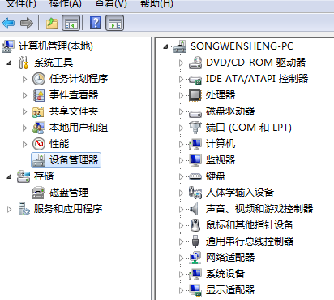展开右侧【端口】选项，通过插拔USB可以确认新增的COM口，根据自己电脑为准
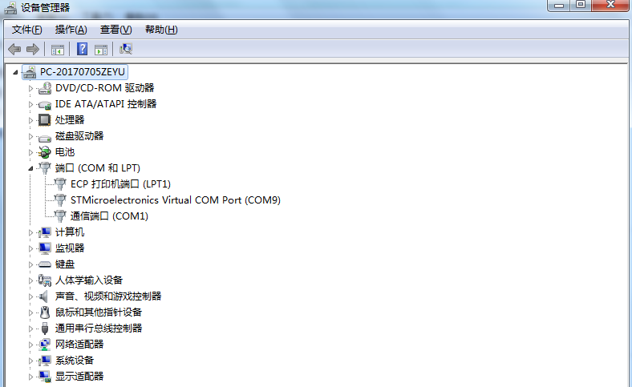WIN10系统跟WIN7系统方法相同，同时可以查看端口设置信息。
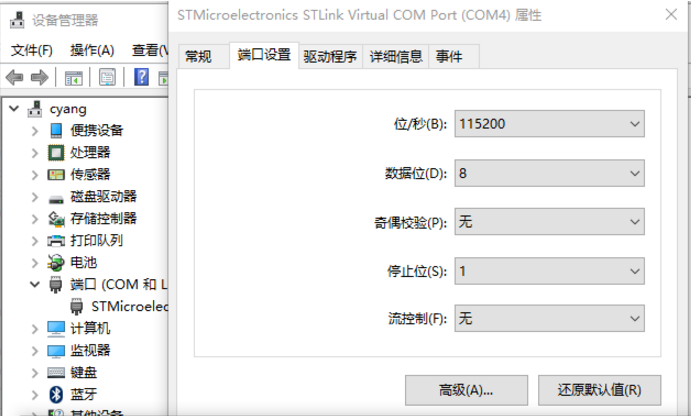
连接设备¶
注解
在连接USB线缆之前，请确认 智能数据采集仪 处于正常供电状态。处于连接调试状态的 智能数据采集仪 ，不会进入休眠状态。
打开串口¶
打开数采精灵标准版软件后，找到设备中的【打开串口】选项，点击之后弹出选择设备串口对话框，这里选择COM9，如果没有显示正确的串口号，可以点击【刷新】按钮进行串口更新。点击【OK】选项后配置成功，配置成功后可进行设备连接，点击【Cancel】选项取消设备连接。
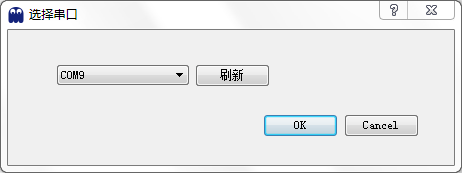连接成果后，会显示出设备状态和信息，在设备状态和信息对话框中显示具体的属性和值。其中属性包括：设备串码、固件版本、通信方式和modeltype。确定后点击【OK】选项进行下一步操作
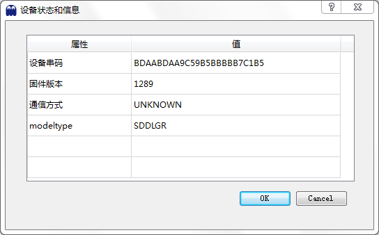
关闭串口¶
如果想要断开数采精灵标准版上位机和数据采集仪的连接，可以点击【关闭串口】选项断开与数据采集仪之间的连接。
操作脚本¶
创建脚本¶
点击【创建脚本】选项可以进行新建脚本以及进行脚本编辑、修改等操作。
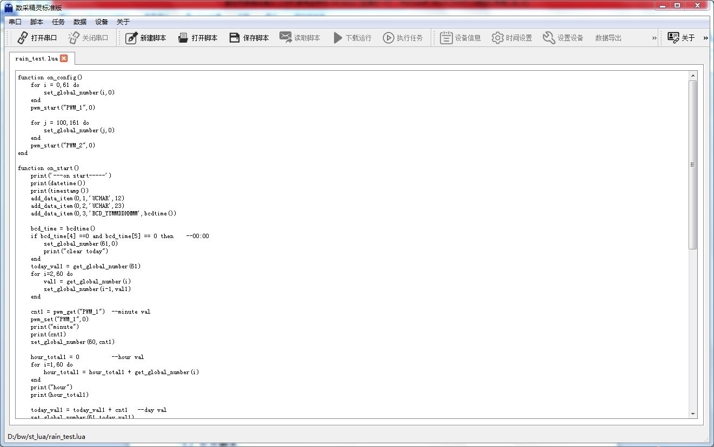
打开脚本¶
如果脚本已经创建好，可以点击【打开脚本】选项找到需要操作的脚本，根据保存脚本的路径找到后缀名为XX.lua的脚本文件。
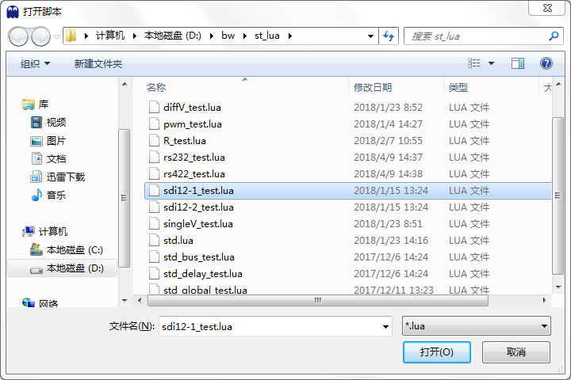找到需要的脚本之后，点击【打开】选项进行操作。
保存脚本¶
在新建脚本之后，需要将新建的脚本或者修改后的脚本加以保存，这里点击【保存脚本】选项进行保存，点击后会弹出保存的具体路径选项
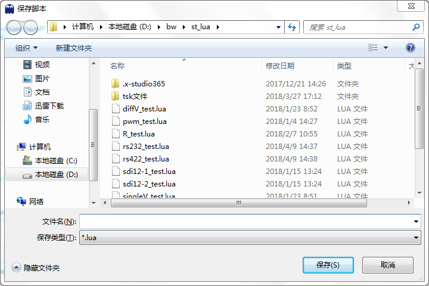
读取脚本¶
如果想获取 智能数据采集仪 内已下载的脚本，可点击【读取脚本】选项，进行脚本查看
下载运行¶
对编辑好的脚本，可点击【下载运行】选项进行脚本下载。
点击【下载运行】之后会弹出执行日志对话框，执行日志内显示具体的执行过程以及发送接收数据等。
在右侧点击【保存日志】选项可进行日志保存，点击保存后会弹出保存的具体路径。
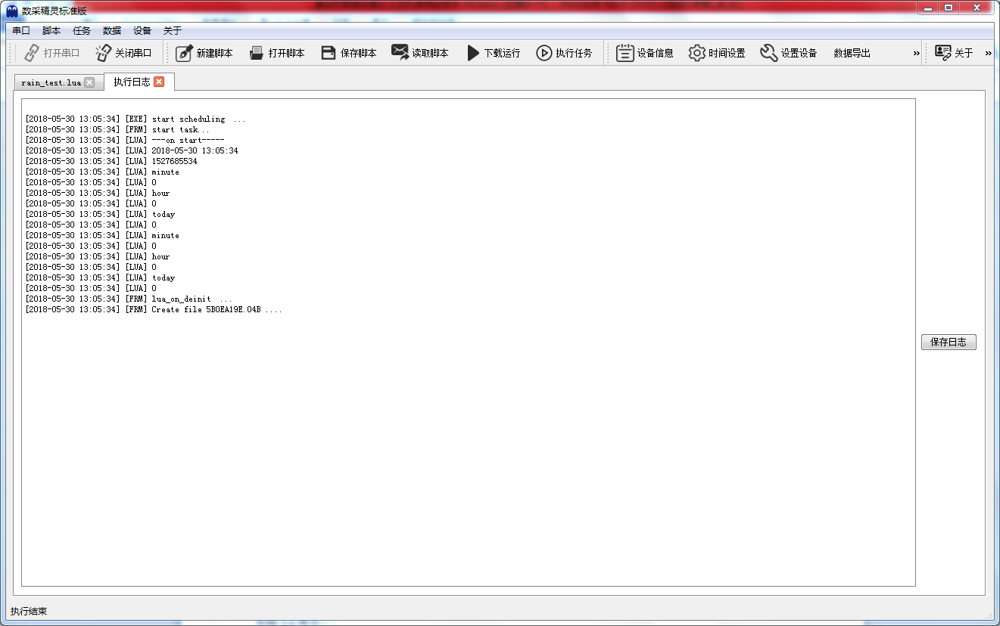
执行任务¶
对于下载好的脚本，可直接点击【执行任务】选项进行任务执行操作，同样会显示出具体的执行日志。
设备设置¶
在设备设置中包括设备信息、时间设置、设置设备、设备重启等操作
设备信息¶
点击【设备信息】选项可以看到采集仪的具体版本号等信息
时间设置¶
点击【时间设置】选项可以进行时间设置和更改操作，点击之后会弹出设备时间选择对话框，可以选择年月日等。
可以直接点击【系统时间】按钮，自动设置为电脑系统时间。设置完成点击【OK】即可。
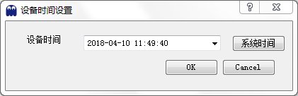
设备设置¶
点击【设备设置】选项后会弹出设备设置选项对话框，对话框中包括服务器设置、任务和上传设置、无线参数设置
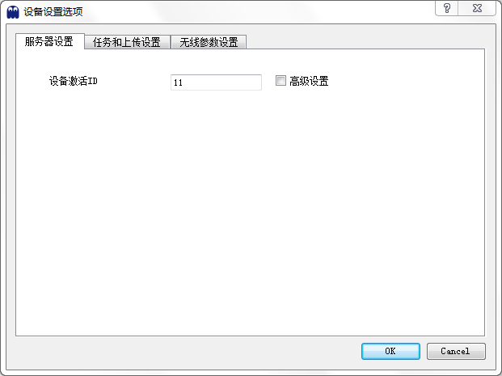
服务器设置¶
在服务器设置对话框中包括设备激活ID选项，在右侧高级设置选项前打对勾后，会弹出具体的高级设备对话框，其中包括主ID、服务器IP地址和服务器端口。根据具体情况在这里可进行一一设置，设置完成点击【OK】选项即可。
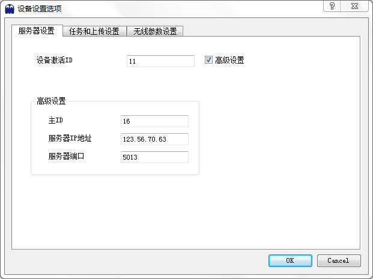
任务和上传设置¶
在任务和上传设置对话框中包括任务采集间隔和数据上传间隔选项，单位为秒，默认设置任务采集间隔为60秒，数据上传间隔为180秒，设置完成点击【OK】选项即可
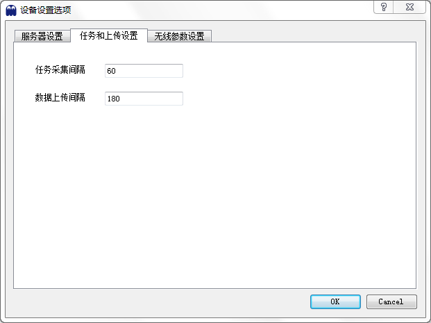
无线参数设置¶
在无线参数设置对话框中包括WIFI设置、LORA通信频率和通信速率设置，在右侧高级设置选项前打对勾后，会弹出具体的高级设备对话框，其中包括产品ID、OTAA ID、OTAA KEY，设置完成点击【OK】选项即可
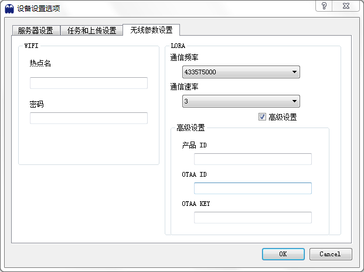
重启设备¶
找到设备操作中的【重启设备】选项可以进行设备重启，点击之后会提示是否重启软件的警告。
数据导出¶
点击【数据导出】选项，弹出数据选择对话框。默认导出 ”所有数据“。也可以选择时间段进行导出。
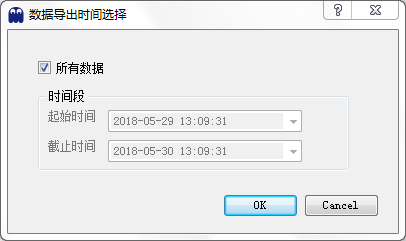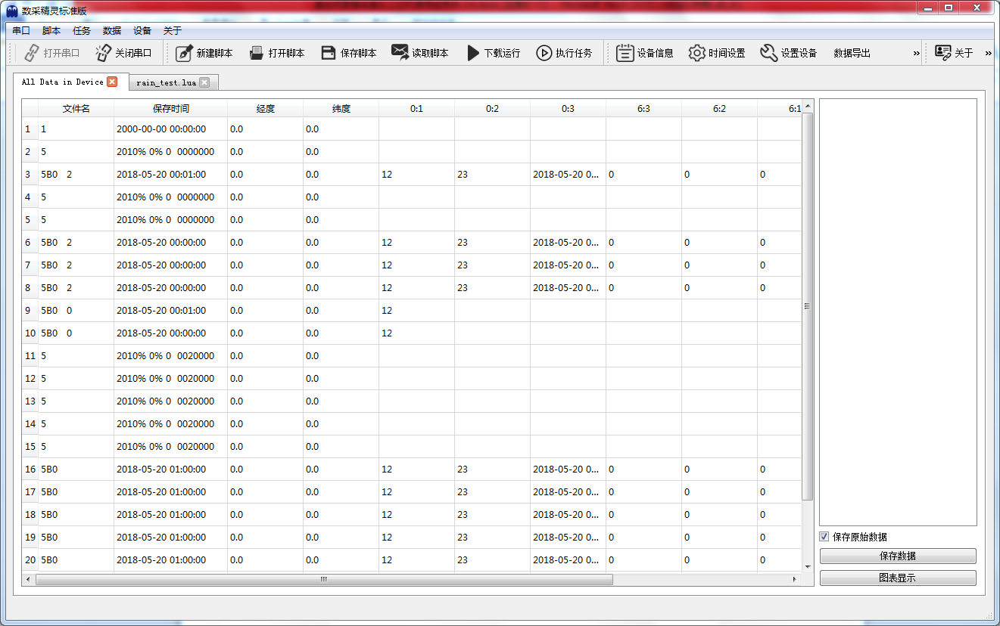